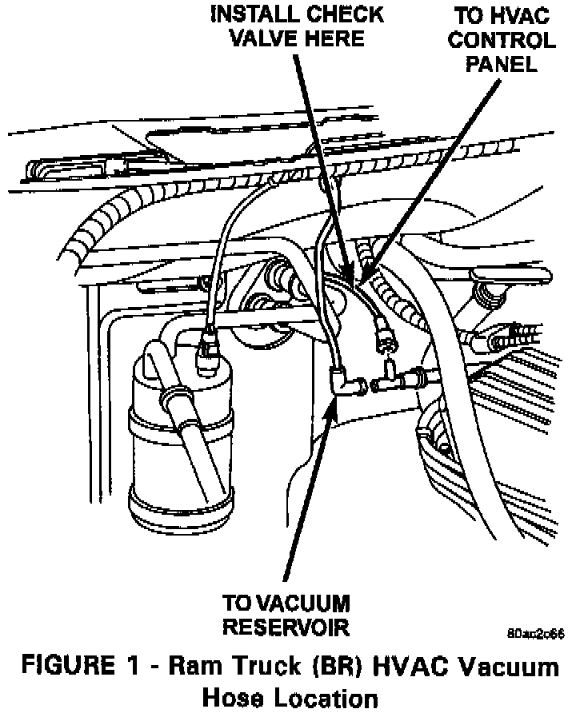
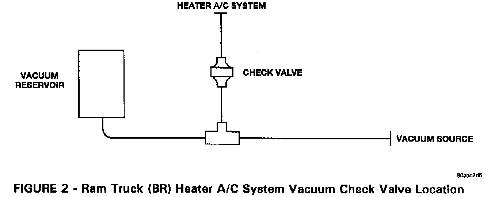
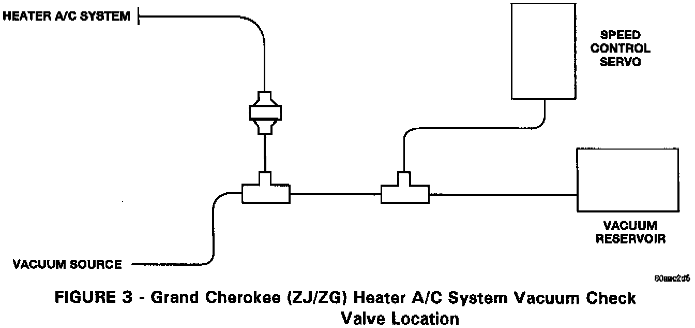

A/C Heater - Mode Change to Defrost During Acceleration
NO: 24-01-96 Rev. AGROUP: Heater & A/C
DATE: Oct. 18, 1996
SUBJECT:
Heater A/C System Changes Mode To Defrost When Accelerating
NOTE:
THIS BULLETIN SUPERSEDES TECHNICAL SERVICE BULLETIN 24-01-96, DATED FEB. 2, 1996, WHICH SHOULD BE REMOVED FROM YOUR FILES. 1997 GRAND CHEROKEE WAS ADDED TO THE MODEL LIST AND A CLEARER DESCRIPTION OF CHECK VALVE LOCATIONS WERE ADDED. ALL REVISIONS ARE HIGHLIGHTED WITH **ASTERISKS**.
MODELS:
1993 - **1997** (ZJ) Grand Cherokee
**1996 - 1997** (ZG) Grand Cherokee (International Markets)
1994 - 1996 (BR) Ram Truck
NOTE:
THIS BULLETIN APPLIES TO VEHICLES EQUIPPED WITH MANUAL A/C
SYMPTOM/CONDITION:
The vacuum supply to the Heater A/C system may drop when accelerating or when speed control engages. This may cause the mode vacuum motor to switch to the defrost position.
DIAGNOSIS:
Use the procedure outlined in the appropriate Service Manual (Group 24) to verify that the Heater A/C system does not have any vacuum leaks. If no leaks are found, perform the Repair Procedure.
PARTS REQUIRED:
1 04677204 Check Valve
AR NPN Appropriate Size Vacuum Hose
REPAIR PROCEDURE:
This bulletin involves installing an additional vacuum check valve.



**Locate the vacuum source line to the Heater A/C system in the engine compartment (Figure 1 Figure 2, and Figure 3).** Install the vacuum check valve in the Heater A/C system vacuum line. Make sure that the check valve is installed to allow vacuum to pass into the Heater NO system, but block any vacuum drop when **accelerating.**
**NOTE:
DO NOT INSTALL THE VACUUM CHECK VALVE IN THE VACUUM LINE GOING TO THE RESERVOIR OR THE SPEED CONTROL SERVO. INSTALLING THE VACUUM CHECK VALVE IN THE LINE GOING TO THE VACUUM RESERVOIR OR THE SPEED CONTROL SERVO WILL HAVE A NEGATIVE EFFECT ON THE SYMPTOM/CONDITION AND POSSIBLY CAUSE THE SPEED CONTROL SYSTEM TO DROP VACUUM WHILE ACCELERATING. **
POLICY: Reimbursable within the provisions of the warranty.
TIME ALLOWANCE:
Labor Operation No: 24-50-47-91 0.2 Hrs.
FAILURE CODE: P8 - New Part